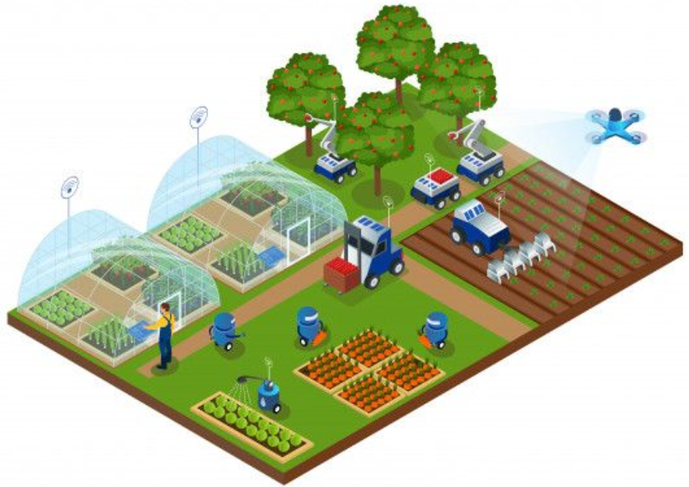
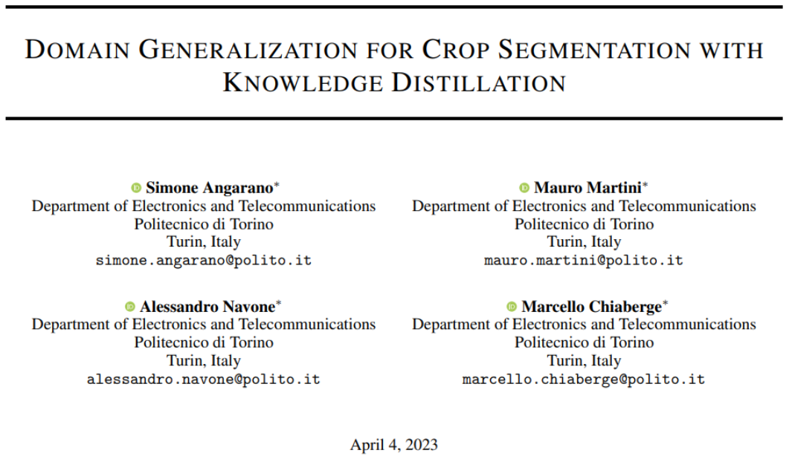
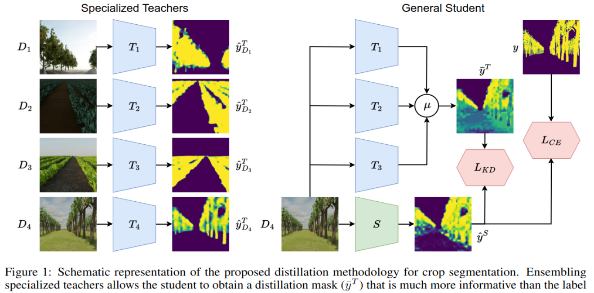
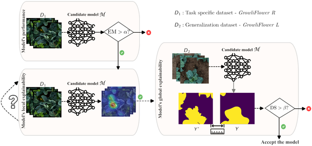
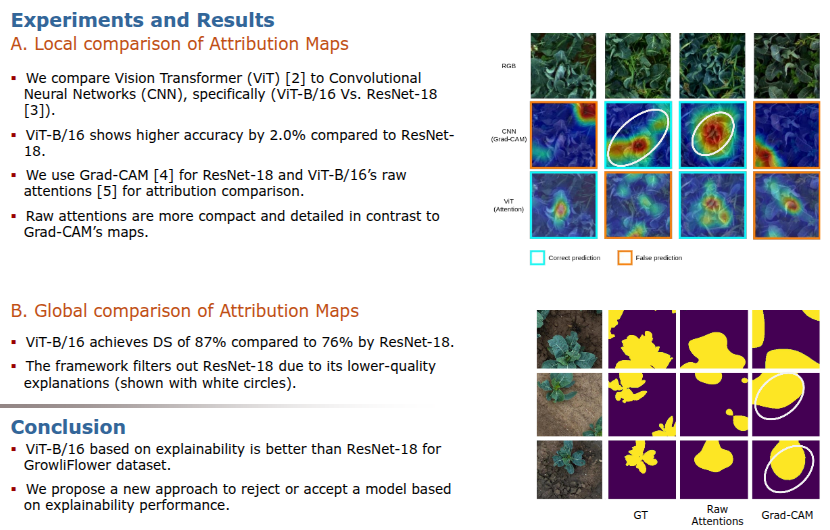

Biggest challenges in precision agriculture
Publication date :
April, 01 2024
Boubacar DIALLO Ph.D.
- R&D Engineer in DATA SCIENTIST | IA - VISION | ROBOTICS | SPECIALIZED LLMs
AI can be used in different areas of agriculture: we can identify in particular :
- Seed Analysis,
- Water Management,
- Soil Analysis,
- Weed and Pest Detection,
- Stress Plant Detection,
- Plant Disease Detection,
- Crop Yield Detection

Although AI techniques as machine Learning and Deep Learning methods have shown promising
results in the agricultural sector, there are still some open challenges that need to be addressed.
These challenges are discussed below:
Limited data availability
One of the biggest challenges in using Deep Learning in agriculture is the limited availability
of labelled training data. Collecting and labelling large datasets for agriculture is a
time-consuming and expensive task that limits the ability of AI models to perform accurately.
Labeling often requires significant time and specialized expertise. As a result, a large portion of collected
images remains unlabeled, constituting an untapped reservoir of raw data. Neglecting this resource means missing
out on crucial opportunities to significantly improve the performance of AI models in agriculture.
To this end, research has proposed several ideas for using unlabeled images:
- Semi-supervised learning (SSL) combines a small amount of labeled data with a large amount of unlabeled data.
The labeled data guides the training of the AI model, while the unlabeled data helps generalize better by
identifying patterns and structures in the data.
- Self-supervised learning (SSL) is a technique in which an AI model learns patterns and representations from
unlabeled data by predicting missing parts of the data (e.g., pixels or context) using automatically generated labels.
This pre-training is then used to train another AI model on specific tasks to improve performance with minimal labeled data.
- Research also includes the use of Generative Adversarial Networks (GANs), neural networks with a special architecture to
generate realistic, labeled synthetic images. This ensures increased diversity while maintaining strict consistency with
established labeling standards for datasets.
Domain Adaptation: New Fields and Crops
Agricultural environments are extremely variable, and AI models trained on data from one region or crop do not always
perform effectively in others. Domain adaptation is therefore a major challenge for AI in precision agriculture,
requiring models capable of rapidly adapting to different contexts and crops.
Research has proposed two main approaches to address this challenge:
- Generalized-specific transfer learning approach: This method improves model performance by leveraging pre-training
on various environments or crops from a diverse agricultural dataset to adapt them to a specific environment or crop.
- Targeted transfer learning approach between similar crops: This method uses AI models pre-trained on data from crops
that share similar characteristics with the target crop. For example, a model trained on sugar beet data can be fine-tuned
to perform effectively on crops such as sunflowers or soybeans. Similarities have also been observed between crops such as
soybeans, potatoes, and broccoli, making these approaches particularly relevant.
Angarano, Simone, et al. "Domain generalization for crop segmentation with standardized ensemble knowledge distillation."
Proceedings of the IEEE/CVF Conference on Computer Vision and Pattern Recognition. 2024.
CVPR

A novel approach to enhance usage domain or environment generalization using knowledge distillation.
Supervised training methodologies struggle to generalize across tasks, domains, and categories.
Deep learning models easily fail in realistic applications without effective generalization ability, leading autonomous systems to failure.
- For practical applications, labeled samples are rarely available in all locations.
- Generalizing to new crops and environmental conditions is critical.
- Transfer knowledge from an ensemble of models individually trained on source domains to a
student model that can adapt to unseen target domains.
- Use dataset containing plants of certain crop and covering different terrain/soil styles,
weather conditions, and light scenarios differents.
- Goal : Unique segmentation model, achieving satisfying results on all conditions.
CVPR

Interpretability and Transparency of AI Results
The lack of interpretability and transparency of AI models is a major challenge in precision agriculture.
Farmers and agronomists must understand the decision-making mechanisms of these models as well as the factors influencing their results.
Emam, Ahmed, et al. "Framework for Enhanced Decision Support in Digital Agriculture Using Explainable Machine Learning."
CVPR

Increased interpretability of AI models provides stakeholders with a better understanding of their strengths,
limitations, and reliability. This promotes both more effective use and increased confidence in practical applications.
CVPR

Robustness of AI Models
AI models are often sensitive to variations in environmental conditions, which can negatively impact their performance.
It is therefore crucial to develop models capable of adapting to changes such as weather conditions, variations in soil
color and type, and differences in lighting.
To address this challenge, research proposes several solutions:
- Data augmentation techniques: These allow the simulation of various environments, such as crop patterns, weeds,
or lighting variations, to enhance the robustness and generalization capacity of models.
- Corner case management: This concerns rare or critical scenarios where models struggle to correctly interpret a situation.
For example, a tractor changing direction, shadows cast, or animals crossing a field. Continuously identifying these
failure cases and integrating them into datasets significantly improves model performance in these complex contexts.
Farmer Adoption of Technology
Farmer adoption of technology represents a major challenge for AI in precision agriculture.
It is crucial to develop intuitive tools and interfaces, accessible even to those without advanced technical expertise.
This will facilitate their integration into daily farming practices.
Conclusion
This article has highlighted several key challenges related to the application of AI in precision agriculture.
While the potential of AI in this sector is immense, sustained research and development efforts remain essential
to overcome these obstacles and offer innovative, efficient, and sustainable solutions.